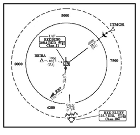
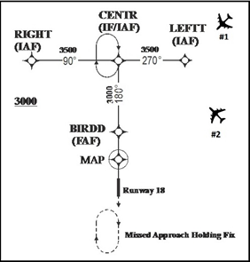
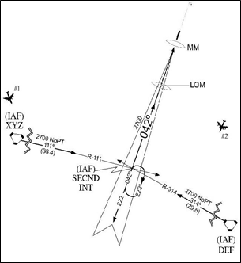
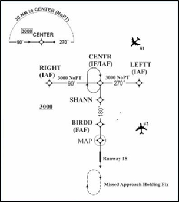
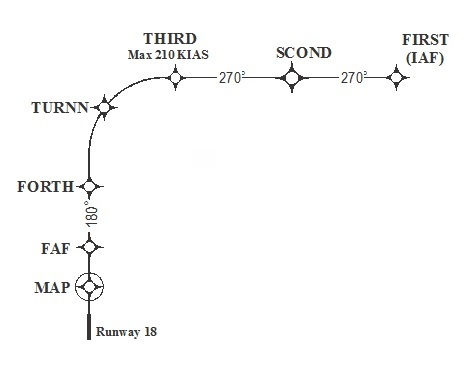
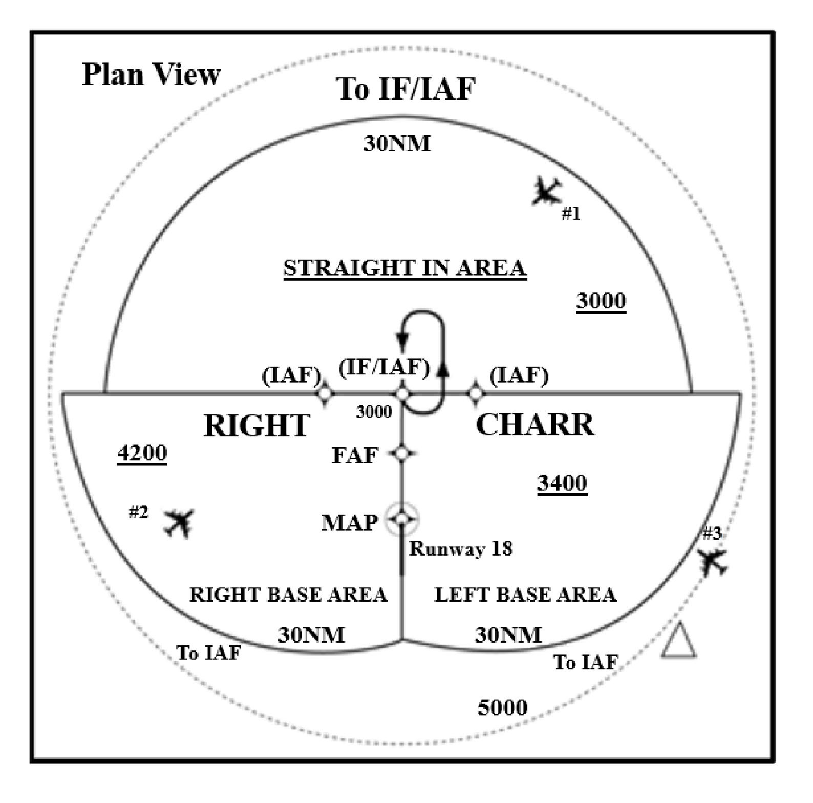
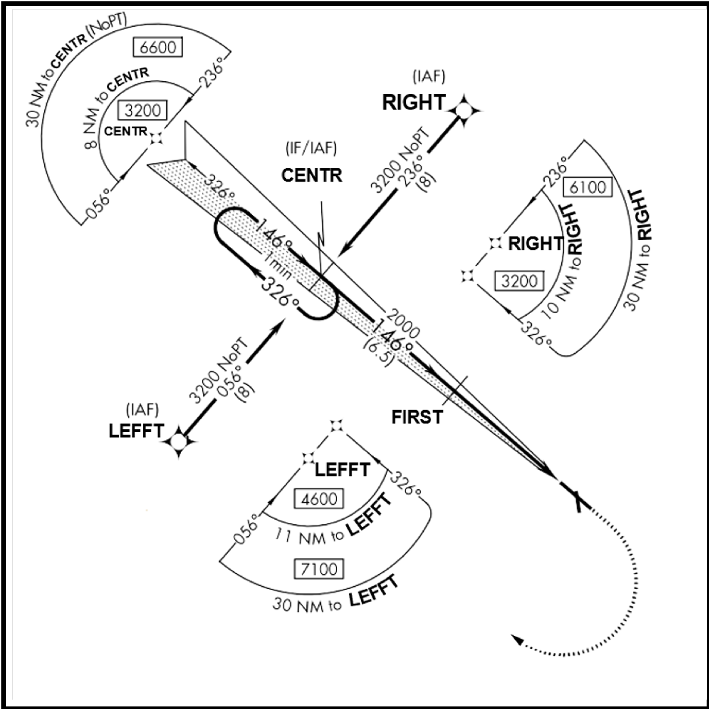

Clear aircraft for “standard” or “special” instrument approach procedures only.
To authorize a pilot to execute a particular instrument approach procedure:
Specify the name of the approach as published on the approach chart.
Where more than one procedure is published on a single chart and a specific procedure is to be flown, specify the approach to be flown.
If only one instrument approach of a particular type is published, the approach need not be identified by the runway reference.
An aircraft conducting an ILS or LDA approach must be advised at the time an approach clearance is issued when the glideslope is reported out of service, unless the title of the published approach procedure allows (for example, ILS or LOC Rwy 05).
Instrument approach procedures (IAPs) must begin at an initial approach fix (IAF) or an intermediate fix (IF) if there is not an IAF.
Where a STAR/ATS route and an IAP connect at an IAF or IF, and the connection will be used, clear the aircraft for approach at least 3 NM prior to the IAF/IF and specify the name of the connection fix. For arrivals via an ATS Route, assign an altitude to maintain until the connection fix.
Where adequate radar coverage exists, radar facilities may vector aircraft to the final approach course in accordance with paragraph 5-9-1, Vectors to Final Approach Course, and paragraph 5-9-2, Final Approach Course Interception.
Where adequate radar coverage exists, radar facilities may clear an aircraft to any fix 3 NM or more prior to the FAF, along the final approach course, at an intercept angle not greater than 30 degrees.
Controllers must not disapprove a pilot request to cold temperature compensate in conjunction with the issuance of an approach clearance.
For aircraft operating on unpublished routes, issue the approach clearance only after the aircraft is:
Established on a segment of a published route or instrument approach procedure, or (See FIG 4-8-1)
FIG 4-8-1Approach Clearance Example

Assigned an altitude to maintain until the aircraft is established on a segment of a published route or instrument approach procedure. (See FIG 4-8-2.)
FIG 4-8-2Approach Clearance Example

Except for visual approaches, do not clear an aircraft direct to the FAF unless it is also an IAF, wherein the aircraft is expected to execute the depicted procedure turn or hold-in-lieu of procedure turn.
Intercept angles greater than 90 degrees may be used when a procedure turn, a hold-in-lieu of procedure turn pattern, or arrival holding is depicted and the pilot will execute the procedure.
If a procedure turn, hold-in-lieu of procedure turn, or arrival holding pattern is depicted and the angle of intercept is 90 degrees or less, the aircraft must be instructed to conduct a straight-in approach if ATC does not want the pilot to execute a procedure turn or hold-in-lieu of procedure turn. (See FIG 4-8-3.)
FIG 4-8-3Approach Clearance Example For Aircraft On a Conventional Approach

Except when applying radar procedures, timed or visual approaches, clear an aircraft for an approach to an airport when the preceding aircraft has landed or canceled IFR flight plan.
Where instrument approaches require radar monitoring and radar services are not available, do not use the phraseology “cleared approach,” which allows the pilot his/her choice of instrument approaches.
RNAV APPLICATION
For RNAV-equipped aircraft operating on unpublished routes, issue approach clearance for conventional or RNAV SIAP including approaches with RF legs only after the aircraft is: (See FIG 4-8-4).
Established on a heading or course direct to the IAF at an intercept angle not greater than 90 degrees and is assigned an altitude in accordance with b2. Radar monitoring is required to the IAF for RNAV (RNP) approaches when no hold-in-lieu of procedure turn is executed.
Established on a heading or course direct to the IF at an angle not greater than 90 degrees, provided the following conditions are met:
Assign an altitude in accordance with b2 that will permit a normal descent to the FAF.
Radar monitoring is provided to the IF.
The SIAP must identify the intermediate fix with the letters “IF.”
For procedures where an IAF is published, the pilot is advised to expect clearance to the IF at least 5 miles from the fix.
Established on a heading or course direct to a fix between the IF and FAF, at an intercept angle not greater than 30 degrees, and assigned an altitude in accordance with b2.
FIG 4-8-4Approach Clearance Example

Clear RNAV-equipped aircraft conducting RNAV instrument approach procedures that contain radius to fix (RF) legs:
Do not clear aircraft direct to any waypoint beginning or within an RF leg.
Do not assign fix/waypoint crossing speeds in excess of charted speed restrictions.
FIG 4-8-5Radius to Fix (RF) and Track to Fix (TF)

Where a terminal arrival area (TAA) has been established to support instrument approaches, use the procedures under subparagraph b above. (See FIG 4-8-6 and FIG 4-8-7.)
FIG 4-8-6Basic “T" and TAA Design

FIG 4-8-7Basic “T” and TAA Design with ILS

When GPS TESTING NOTAMs are published and testing is actually occurring, inform pilots requesting or cleared for a RNAV approach that GPS may not be available and request intentions. Do not resume RNAV approach operations until certain that GPS interference is no longer a factor or such GPS testing exercise has ceased.
During times when pilots report GPS anomalies, request the pilot's intentions and/or clear that aircraft for an alternative approach, if available and operational. Announce to other aircraft requesting an RNAV approach that GPS is reported unavailable and request intentions.
When clearing an aircraft for an RNAV approach, and a GPS NOTAM is published (a WAAS NOTAM is not issued), both GPS and WAAS may become unavailable. Therefore, when a GPS anomaly is reported, request the pilot's intentions.
4-8-2. APPROACH CLEARANCE TO UNCONTROLLED AIRPORTS
When issuing an approach clearance at locations without an operating control tower or where part‐time towers are closed, state the name of the airport.
4-8-3. RELAYED APPROACH CLEARANCE
TERMINAL
Include the weather report, when it is required and available, when an approach clearance is relayed through a communication station other than an air carrier company radio. You may do this by telling the station to issue current weather.
4-8-4. ALTITUDE ASSIGNMENT FOR MILITARY HIGH ALTITUDE INSTRUMENT APPROACHES
Altitudes above those shown on the high altitude instrument approach procedures chart may be specified when required for separation.
4-8-5. SPECIFYING ALTITUDE
Specify in the approach clearance the altitude shown in the approach procedures when adherence to that altitude is required for separation. When vertical separation will be provided from other aircraft by pilot adherence to the prescribed maximum, minimum, or mandatory altitudes, the controller may omit specifying the altitude in the approach clearance.
4-8-6. CIRCLING APPROACH
Circling approach instructions may only be given for aircraft landing at airports with operational control towers.
Include in the approach clearance instructions to circle to the runway in use if landing will be made on a runway other than that aligned with the direction of instrument approach. When the direction of the circling maneuver in relation to the airport/runway is required, state the direction (eight cardinal compass points) and specify a left or right base/downwind leg as appropriate.
Do not issue clearances, such as “extend downwind leg,” which might cause an aircraft to exceed the circling approach area distance from the runways within which required circling approach obstacle clearance is assured.
4-8-7. SIDE-STEP MANEUVER
TERMINAL
Side‐step Maneuver. When authorized by an instrument approach procedure, you may clear an aircraft for an approach to one runway and inform the aircraft that landing will be made on a parallel runway.
4-8-8. COMMUNICATIONS RELEASE
If an IFR aircraft intends to land at an airport not served by a tower or FSS, approve a change to the advisory service frequency when you no longer require direct communications.
4-8-9. MISSED APPROACH
Except in the case of a VFR aircraft practicing an instrument approach, an approach clearance automatically authorizes the aircraft to execute the missed approach procedure depicted for the IAP being flown.
If assignment of the alternate missed approach procedure is necessary, the controller must issue the description as published on the appropriate FAA Form 8260 or military form for the IAP.
If the alternate missed approach procedure is published and in effect via NOTAM, the procedure description need not be issued to the pilot.
After an aircraft commences a missed approach, it may be vectored at or above the MVA/MIA or follow the provisions of paragraph 5-6-3, Vectors Below Minimum Altitude.
4-8-10. APPROACH INFORMATION
Specify the following in the approach clearance when the pilot says he/she is unfamiliar with the procedure:
Initial approach altitude.
Direction and distance from the holding fix within which procedure turn is to be completed.
Altitude at which the procedure turn is to be made.
Final approach course and altitude.
Missed approach procedures if considered necessary.
Applicable notations on instrument approach charts which levy on the pilot the responsibility to comply with or act on an instruction; for example, “Straight-in minima not authorized at night,” “Procedure not authorized when glideslope/glidepath not used,” “Use of procedure limited to aircraft authorized to use airport,” “Procedure not authorized at night,” or a Snowflake icon indicating mandatory cold temperature compensation.
4-8-11. PRACTICE INSTRUMENT APPROACHES
Authorize, withdraw authorization, delay, or refuse to authorize practice instrument approaches in accordance with the following:
When sector/position traffic conditions and/or workload prevent the authorization of practice instrument approaches, advise the pilot of the reason, and if applicable, the anticipated delay until the operation can be approved. Controller‐imposed delays should not be indefinite. Normally, approaches in progress should not be terminated.
Except for military aircraft operating at military airfields, ensure that neither VFR nor IFR practice approaches disrupt the flow of other arriving and departing IFR or VFR aircraft.
IFR aircraft conducting practice instrument approaches must be afforded IFR separation in accordance with Chapter 3, Chapter 4, Chapter 5, Chapter 6, and Chapter 7 of this order until the aircraft lands and the flight is terminated, or the pilot cancels the flight plan.
VFR aircraft conducting practice instrument approaches:
Must be instructed to maintain VFR on initial contact or as soon as possible thereafter.
Where a facility directive requires the application of IFR separation to VFR aircraft practicing instrument approaches, IFR separation in accordance with Chapter 3, Chapter 4, Chapter 5, Chapter 6, and Chapter 7 of this order must be provided. Except for super or heavy aircraft, 500 feet vertical separation may be applied between VFR aircraft and between a VFR and an IFR aircraft.
Controller responsibility for IFR separation to VFR aircraft begins at the point where the approach clearance becomes effective and ends when the aircraft reaches the missed approach point, unless IFR separation is required for the missed approach procedure as specified in subparagraph e2 below.
Where a facility directive does not require the application of IFR separation services to VFR aircraft practicing instrument approaches, the controller must:
Instruct the pilot to maintain VFR and advise the pilot that separation services are not provided.
Provide traffic information or advise the pilot to contact the appropriate facility.
If an altitude is assigned, including at or above/below altitudes, the altitude specified must meet MVA, minimum safe altitude, or minimum IFR altitude criteria.
Missed Approaches.
Unless alternate instructions have been issued, IFR aircraft are automatically authorized to execute the missed approach depicted for the instrument approach being flown.
VFR aircraft are not automatically authorized to execute the missed approach procedure. This authorization must be specifically requested by the pilot and approved by the controller. When a missed approach has been approved and the practice approach is conducted in accordance with subparagraph d2 above, IFR separation must be provided throughout the procedure including the missed approach. If the practice approach is conducted in accordance with subparagraph d3 above, IFR separation services are not required during the missed approach.
4-8-12. LOW APPROACH AND TOUCH‐AND‐GO
Consider an aircraft cleared for a touch‐and‐go, low approach, or practice approach as an arriving aircraft until that aircraft touches down or crosses the landing threshold; thereafter, consider the aircraft as a departing aircraft. Before the aircraft begins its final descent, issue the appropriate departure instructions the pilot is to follow upon completion of the approach (in accordance with paragraph 4-3-2, Departure Clearances). Climb‐out instructions must include a specific heading or a route of flight and altitude, except when the aircraft will maintain VFR and contact the tower.